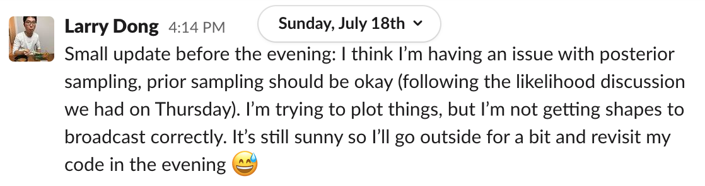
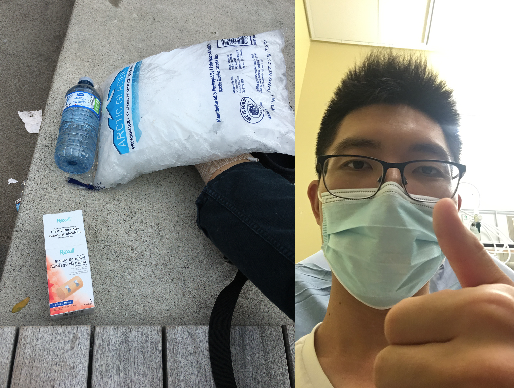

🐢 The slump...
GSoC Part 1
With half of GSoC behind me (already!), progress in the past few weeks have been embarrassingly slow. The first challenge is learning how to learn. As I wrote in my previous post, there is so much that I don’t know; while this is inherently one of the exciting aspects of GSoC, it can be daunting to run around in circles. From the testing in the CD/CI pipeline to writing a likelihood for a sample from a Dirichlet Process, the first 5 weeks of GSoC have been invested into making mistakes. As my mentors have said in the first evaluation: “We encourage him to continue to focus on quantity rather than quality, and don’t be afraid to make mistakes – a ton of learning occurs from iterating on code.”
Although I have little code to actually talk about, here is a rundown of “mistakes” that I learned during the past weeks.
Mistake 1: Attempting to get too involved with version 4 refactoring of PyMC3
PyMC3 is currently undergoing a refactoring process converting its backend structure to
Aesara which, frankly, is difficult to wrap my head around. My attempt to refactor the $\chi^2$ distribution (see PR
here and
here) was an “easy” exercise that took a long time to figure out during the (pre-)community bonding phase. Dirichlet processes are often used to model the latent parameter in mixture models such that the number of clusters need not to be specified. However, with pm.Mixture and pm.DensityDist needing refactoring, I initially wanted to challenge myself to help write an rv_op for mixture models, but it turns out to be quite challenging (see PR
here).
Solution to Mistake 1
Rather than spend time figuring out how to rewrite a mixture rv_op, it is more worthwhile to spend my time implementing a single class for Dirichlet processes (mixtures) and leverage pm.Mixture once it has been refactored. Dirichlet processes are complicated on its own, so it is okay that I solely focus on them.
Mistake 2: Coding Dirichlet processes without a likelihood
PyMC3 relies on using pm.Model() as a context manager such that distributions can be posited on random variables and parameters. Given that a Dirichlet process $G$ can be rewritten as:
\begin{align*} G(x) = \sum_{h=1}^{\infty} w_h \delta_{m_h}(x) \end{align*}
for sticks $w_h$ and atoms $m_h$ (see below for more mathematical details), this is exactly what I coded using Aesara operations, which are very similar to NumPy ones.
import pymc3 as pm
import numpy as np
import aesara.tensor as at
def stick_breaking(betas):
sticks = at.concatenate([[1], at.cumprod(1 - betas[:-1])])
return betas * sticks
Xs = np.array([-1, 0, 0.5, 1, 2])[..., np.newaxis]
K = 19 # number of sticks
with pm.Model() as model:
betas = pm.Beta("betas", 1., np.ones(shape=(K,)))
weights = pm.Deterministic("weights", stick_breaking(betas))
G0 = pm.Normal("base-dist", 0, 1)
dirac = at.lt(G0, Xs)
linear_comb = at.sum(at.mul(weights, dirac), axis=1)
prior_atoms = pm.Deterministic(
name="dp-prior",
var=linear_comb,
)
It worked, but the issue is that pm.Deterministic does not have a likelihood of its own. PyMC3 revolves around building a likelihood behind the scenes on which Hamiltonian Monte Carlo sampling methods can be executed. While the code above works, it is not the right direction when it comes to building an API and integrating it in more complex and potentially hierarchical models.
Solution to Mistake 2
The solution to this is “simply” to build a class that implements a likelihood for a Dirichlet process. However, how do we write a likelihood for a sample from a Dirichlet process? Do nonparametric methods, frequentist or Bayesian, have likelihoods? (The answer is yes!)
Temporarily leveraging pm.Potential to posit a likelihood, we design a truncated Dirichlet process (truncated because this is how we need to handle the infinite sum). Although a sample from a Dirichlet process is a discrete distribution, we can evaluate its likelihood at the drawn weights and atoms:
\begin{align*} \mathcal{L}(M; \pmb{w}, \pmb{m}, G_0) = \prod_{h=1}^K f_{G_0}(m_h) \text{Beta.pdf}(v_h) \end{align*}
where $f_{G_0}(\cdot)$ is the probability density or mass function of the base distribution $G_0$ and $v_h \stackrel{\small{\text{i.i.d.}}}{\sim} \text{Beta}(1, M)$ for some concentration parameter $M > 0$. However, given weights $w_h = v_h \prod_{\ell < h} (1 - v_\ell)$, we can recover the Beta random variables/realizations:
\begin{align*} v_h = \frac{w_h}{1 - \sum_{\ell < h} w_\ell} . \end{align*}
Mistake 3: Looking too closely to the Gaussian process submodule
Here is the
submodule and some
documentation. Gaussian processes are similar to Dirichlet processes in that they are formally stochastic processes and allow users to posit little restrictions regarding the functional form of the estimand. From a practical perspective, Gaussian processes can be used as priors over arbitrary continuous functions whereas Dirichlet processes can serve as priors for distributions. However, when it comes to their implementation (especially in PyMC3/Aesara), the way how Gaussian processes deal with infinitum is different to the way how Dirichlet processes handles this notion. Broadly speaking, the Gaussian process submodule centers around providing Xs, locations where we have observations, and providing inference for Xnew. However, I initially thought about doing the same thing for Dirichlet processes in that, given observations Xs from a distribution $G$ of interest, I can output inference on “atomic distributions” or, differently put, performing inference on $P(G \leq g | X)$ for selected values of $g$ (similarly to Xnew for Gaussian processes).
Solution to Mistake 3
Dirichlet processes can be represented by a specifically constructed infinite sum (see Mistake 2 above). However, in practice (i.e. in code), our computers cannot sum up infinite terms hence we can truncate the sum at some large enough value $K$. That being said, a likelihood can be written out for a single sample from a Dirichlet process and, hopefully, have the base class of a DirichletProcess inherent from Distribution such that observed values can still be conditioned upon using an obs=... argument (like all other distributions in PyMC3) (API design to be discussed in the coming weeks…).
Mistake 4: Diving too deep into theory
The mathematical properties of Dirichlet processes and how they work on paper is very important, don’t get me wrong. However, it is equally important to think about how these can translate into code and can be programmed using the PyMC3 lingo. There are many specifics about Dirichlet processes that I can effectively ignore without it affecting my learning process and implementation in code: what exactly is a random probability measure, convergence via the Bernstein-Von Mises theorem, reading original published papers decades ago, etc.
Solution to Mistake 4
Gaging what’s enough of theory can be difficult, but my understanding is that here is short list what I need to know from the mathematical side:
- Stick-breaking construction of Dirichlet process;
- Marginal and posterior distributions;
- Dirichlet process mixtures;
- How Figures 2.1, 2.2 and 2.3 are constructed in Müller et al. (2015).
Also, I can also look at the
dirichletprocess package in R. Not only is it well-documented, but it can also serve as a inspiration in constructing the PyMC3 submodule.
Mistake 5: Running in circles and asking the wrong questions
When I would meet with my mentors, I would have a laundry list of questions, but I wouldn’t have anything to share (document, plots, agenda). Asking questions is good, but it would be more beneficial to organize something more systematic such that meetings can be more efficient and my ideas can be shared more clearly. When asking questions to the PyMC community, I tend to be already overwhelmed and my thoughts aren’t properly conveyed. For instance, a question that is often asked as a reply to me is: “Can you show an example?”
Solution to Mistake 5
Although I have been recommended to ask once I spend beyond 20 minutes trying to debug something, it is equally or even more important to have some prepared that showcases my question via code and/or plots. For instance, here is a
PR where I ask about shapes in building a stick-breaking Aesara RandomVariable class. I also drafted a meeting
agenda in preparation for my meeting with my mentors, a
notebook on what I think is working well and other
notebook
s on what is not working as well as I would have liked. Moving forward, I intend to use these tools to better communicate my questions and show my ongoing progress.
Mistake 6: Injuring myself on Sunday…
turned into:
from a trip to the skatepark… Unsurprisingly, I was not very productive later that evening nor the following day. Luckily, no bones were broken! 💪
Solution to Mistake 6
As prescribed by the doctor, rehabilitation with the physiotherapist, some ankle exercises and no more skating for the next few weeks (if not months)… 😕
Conclusion
Last but not least, imposter syndrome can feel very real and we all make progress at different rates. It is important to stay optimistic regarding my progress and my mentors ( Austin and Chris) have been very supportive. Especially for a project and this opportunity that I care deeply about, I am motivated to keep learning, make even more mistakes and, hopefully one day, have a Dirichlet process submodule ready to be launched for public use.
Continuation of Math Notes
As said above, diving too deep into the theory can lead to an endless recursion of readings. However, understanding what Dirichlet processes are is important!
2.2 Dirichlet Process
Temporary placeholder: Coming up! I need to study a bit for my upcoming exam first…
Larry Dong
PhD Student in Biostatistics
Statistics and data analysis are my strengths, but medical research is my passion.